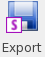

main menu
| module menu
| << previous section
| next section >>
main menu
| module menu
| << previous section
| next section >>
Silicon WorkBench Interface
1. Working With the Graphical User Interface
1.1 Strategy
1.2 Starting the Graphical User Interface
1.3 Renaming Layers
1.4 Creating Auxiliary Layers
1.5 Using Boolean Operations
1.6 Using Stretches
1.7 Defining Simulation Domains
1.8 Saving Information
Objectives
- To start the graphical user interface and to perform basic operations in the TCAD Sentaurus–Silicon WorkBench interface.
1.1 Strategy
Sentaurus Process can read GDS layout files directly as shown in Section 14. Special Focus: Using Mask Information From GDSII Files, or you can use the Silicon WorkBench graphical user interface (GUI) to prepare the layout information and to declare the simulation domains. Additional information that makes the process simulation setup more convenient can be supplied.
In this module, the following strategy is applied:
- The GDS file is loaded into the GUI. A mapping of layer numbers to layer names is performed and is saved for later use.
- Auxiliary layers are defined.
- Simulation domains are defined.
- Information is saved.
The complete project can be investigated from within Sentaurus Workbench in the directory Applications_Library/GettingStarted/siwb/siwb_for_process.
1.2 Starting the Graphical User Interface
You can start the GUI from the command line with:
siwb
To load a GDS file, choose File > Open. An example is shown in Figure 1.
For a detailed description of Silicon WorkBench functionality, choose Help > Documentation. This links to the user documentation.
In this section, only functionality relating to layout information in process simulation is discussed.
Even though this section discusses how to use Silicon WorkBench, other
Synopsys layout editors, IC WorkBench Edit/View Plus and IC Validator WorkBench, can
provide the same functionality for TCAD purposes. If you use IC WorkBench Edit/View Plus,
then you must set the appropriate environment variable. In a Linux C shell, this can be
performed on the command line or in the .cshrc file:
setenv ICWBEV_USER SENTAURUS
and the command to start the tool is icwbev. Similarly, if you use IC Validator
WorkBench, then the environment variable to set is ICVWB_USER and the command
to start the tool is icvwb.
{kind=link}
Figure 1. Main window of Silicon WorkBench with a GDS file loaded. (Click image for full-size view.)
1.3 Renaming Layers
The original GDS file contains numbered layout layers. For a TCAD simulation, this is not convenient, and most users want to address layers by names. The mapping of layer numbers is performed by clicking in the window with the layout layers and adding the corresponding name, as shown in Figure 2.
{kind=link}
Figure 2. (Left) Numbered layers and (right) renamed layers. (Click image for full-size view.)
The mapping of layer numbers to layer names must be saved. To save the mapping:
- Click the Sentaurus Export button
.
The Sentaurus Export dialog box opens. - Select Markups.
- Select Active layout.
- In the Output file field, enter the name of the file.
- Click OK.
It is convenient to save the file with a .tcl or .mac extension because these are predefined file filters when reading or writing files in Silicon WorkBench. The file that is saved this way is an ASCII file, which looks like:
default winding 1 layout open ./BICMOSinverter.gds Inverter cell transform 1.0 0.0 0 0.0 0.0 layer add 1:0 layer configure 1:0 -name NWELL -fill #00ff00 -pattern fill12-a -outline \ #00ff00 -lineStyle solid -lineWidth 1 layer add 2:0 layer configure 2:0 -name NPDIFF -fill #0000ff -pattern fill12-b -outline \ #0000ff -lineStyle solid -lineWidth 1
This file contains the absolute path to the original GDS file and the mapping of layer numbers to layer names. Therefore, you can read this file into the Silicon WorkBench GUI instead of loading the GDS file. In many cases, however, the correspondence of layer numbers to layer names is the same for many GDS files. You can delete the first lines of this file (until cell transform) and keep only the lines starting with layer configure. Then, this file can be read after a GDS file has been loaded into the GUI. Finally, a file containing the layer numbers and the corresponding layer names can be created manually. The display options can be omitted:
layer configure 1:0 -name NWELL layer configure 2:0 -name NPDIFF
1.4 Creating Auxiliary Layers
In a TCAD simulation flow, it is often helpful to create additional layers and to use these as masks. A GDS file usually has layers for metallization, but these layers do not distinguish between different contacts such as source, gate, and drain. In a TCAD simulation, however, it is essential to have that information.
To add this information to the layout, you can add auxiliary layers containing several polygons. To add a new layer:
- In the Tree View pane, right-click Layout Layers and choose
New Layer.
The New Layer dialog box opens. - Assign a layer number and a layer name, and select a fill pattern and a color for the polygons. Then, click OK to close the dialog box.
- Draw polygons by selecting the Polygon toolbar button on the Edit tab.
Figure 3 shows the part of a layout that contains an NMOS transistor. Three new layers have been added: nsource, ngate, and ndrain. With this, contacts can be assigned easily in Sentaurus Process, and no changes are necessary if a different simulation domain is chosen.
{kind=link}
Figure 3. Introducing auxiliary layers: NMOS part of a layout is shown, and additional layers are introduced for the source, drain, and gate contacts. (Click image for full-size view.)
It is not necessary that these additional polygons are defined everywhere in the layout (as in the previous example, you do not need to create polygons for all contacts in the layout). It is only necessary to define them in regions in which TCAD simulations are performed (the TCAD simulation domains).
1.5 Using Boolean Operations
Silicon WorkBench supports the use of Boolean operations, which can be helpful when creating auxiliary layers, for example. Boolean operations are used with the Tcl/Tk programming language. The logical and operation of two layers, for example, is:
set L1 [bop extract -layers 20] set L2 [bop extract -layers 21] set L1andL2 [bop and $L1 $L2] bop insert $L1andL2 30
Here, layer 20 is assigned to the variable L1 and layer 21 is assigned to the variable L2. The third line performs the logical and operation of layers L1 and L2, and assigns the result to the variable L1andL2. The last line adds the result as layer 30 to the current layout.
For information about the use of Booleans, refer to the Silicon WorkBench documentation (choose Help > Documentation).
The layout must be flat to allow for Boolean operations. If the layout is hierarchical, then type hierarchy explode in the Command Pane of the GUI.
1.6 Using Stretches
Silicon WorkBench supports the use of stretches. A stretch is a line in the layout perpendicular to which the layout can be stretched.
Such a stretch is introduced by clicking the Stretch button and drawing a horizontal or vertical stretch line in the layout (see Figure 4). The stretch is named automatically. It can be renamed in the list of open cells. The exact coordinates can be specified there as well.
{kind=link}
Figure 4. Part of a layout showing a stretch; black arrow indicates the positive direction of stretch values. (Click image for full-size view.)
The stretch utility applies the stretch to all mask layers. The effect is illustrated in Figure 5 in which a gate length variation is simulated. If you want to apply a stretch only to one layer, see Section 2.1 Defining the Process Simulation Domain.
{kind=link}
Figure 5. Parameterizing a simulation using a stretch that is applied to the middle of the gate mask. (Left) With a stretch value of 0.0, the original mask is used. (Right) With a stretch value of 1.0, all mask edges with a coordinate right of the middle of the gate are moved by 1.0 μm. (Click image for full-size view.)
1.7 Defining Simulation Domains
You can define 1D, 2D, and 3D TCAD simulation domains. They are called point, gauge, and highlight, respectively, and can be drawn into the layout by selecting the appropriate button from the toolbar:
In most cases, you will draw the simulation domains at their approximate positions. The exact coordinates can be specified in the list of open cells (see Figure 6). The names of the simulation domains also can be changed there.
It is recommended not to let simulation domains coincide with mask edges.
{kind=link}
Figure 6. Part of a layout with several simulation domains: the exact coordinates and the names of simulation domains and stretch lines can be specified in the list of open cells in the Tree View pane. (Click image for full-size view.)
1.8 Saving Information
After all the steps described in the previous sections, two files should be saved: one file that contains all of the above information and can be used for a restart at this step, and one file that can be used with Sentaurus Process.
The first file, the Sentaurus markup file, contains the mapping of layer numbers to layer names, the auxiliary layers, and the TCAD simulation domains. The name of the original layout file and the absolute path to it are saved in this markup file, so it is sufficient to load only this file if changes need to be made.
To save a markup file:
- Click the Sentaurus Export button.
The Sentaurus Export dialog box opens. - Select Markups.
- If you have added auxiliary layers, then select Include new layers.
The original GDSII file will not be changed. - To open a specific layout file when reloading the markup file, select
Open a layout file:
(a) Active layout: Select this option when using a centrally located GDSII layout. This option is particularly useful when working with a very large full-chip layout.
(b) Layout: Select this option when working with an edited or a local version of the GDSII layout. Specify the name of the layout. - Enter the file name in the Output file field.
The recommended extension for this file is _mkp.mac. - Click OK.
The second file, the TCAD layout file, is used to exchange layout information between Silicon WorkBench and TCAD Sentaurus. This file is flat and does not contain a reference to the GDSII file. It is a small file because it contains only the parts of the layout needed for TCAD Sentaurus.
To save this file:
- Click the Sentaurus Export button.
The Sentaurus Export dialog box opens. - Select TCAD layout.
- A layer in a layout can be defined by a large number of touching or overlapping polygons. It is recommended to merge all these polygons into a smaller number of possibly more complex polygons by selecting Merge shapes.
- For better viewing, layers are padded by 10 nm. To change this value, edit the Margin field.
- Enter the file name in the Output file field.
The recommended extension for this file is _lyt.mac. - Click OK.
You can reload and edit the markup file (*_mkp.mac) as needed.
The TCAD layout file (*_lyt.mac), however, should be reloaded for viewing only
(for example, for debugging purposes). Editing and resaving the TCAD layout will result
in duplication of polygons.
Since the markup file contains the full path to the GDSII file, you will
need to edit the markup file if you move the GDSII file or if you rename the directory
containing the markup file.
main menu | module menu | << previous section | next section >>
Copyright © 2022 Synopsys, Inc. All rights reserved.